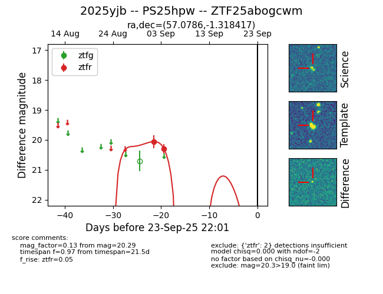
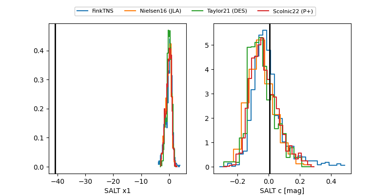

FINK: ZTF25abogcwm
Lasair: ZTF25abogcwm
ALeRCE: ZTF25abogcwm
TNS: 2025yjb
YSE: 2025yjb
ZTF25abogcwm (ztf,fink)
2025yjb (tns,yse)
PS25hpw (panstarrs)
equatorial (ra, dec) = (57.0786,-1.31842)
galactic (l, b) = (189.2201,-40.40285)


last ztfr=20.29
2 ztfr detections